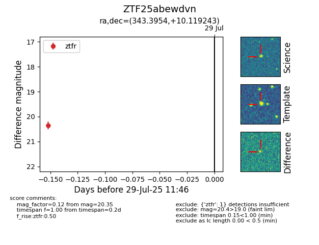

Target ZTF25abewdvn at 2025-07-29 11:46, see:
FINK: fink-portal.org/ZTF25abewdvn
Lasair: lasair-ztf.lsst.ac.uk/objects/ZTF25abewdvn
ALeRCE: alerce.online/object/ZTF25abewdvn
alt names
ZTF25abewdvn (ztf,fink)
coordinates:
equatorial (ra, dec) = (343.3954,+10.11924)
galactic (l, b) = (81.4258,-43.05590)
photometry
last ztfr=20.35
1 ztfr detections
